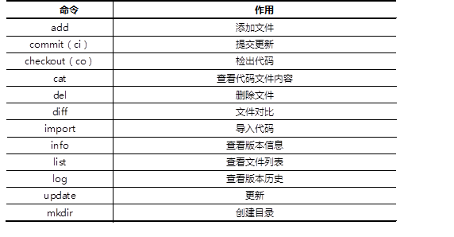
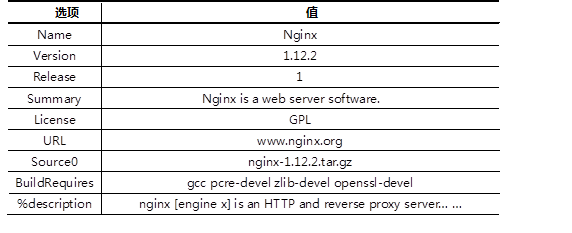

本案例要求先快速搭建好一台Subversion服务器，并测试该版本控制软件：(同YUM仓库的原理一样，若是本地共享则baseurl=file:// 若是网络则是http://或者是ftp://，企业中可以搭建一个svn服务器，让所有的员工都在该服务器上进行文本编辑)
· 创建版本库
· 导入初始化数据
· 检出数据至用户本地副本
· 对本地副本进行增删改查等操作 （svn只做增量修改，不做覆盖修改）
· Svn会自动记录每一次修改（例如：在FTP中，两人或者多人均修改原始文件，当分别在修改完毕上传后，后者的文档会覆盖前者的文档，导致数据的丢失，还存在一种串行开发的问题，效率也低，同时无法完成并发访问，SVN可以避免该问题。SVN采用：拷贝--修改--合并的模式，既不产生数据覆盖，也不产生串行问题。）
使用YUM安装subversion软件，使用svn客户端工具连接svnserver服务器并测试版本控制软件。
使用svn命令测试svnserver服务时可以使用的命令列表如表-1所示。
表－1 svn命令列表

实现此案例需要按照如下步骤进行。
步骤一：安装Subversion服务器
1）YUM安装subversion软件
1. [root@web1 ~]# yum -y install subversion
2. [root@web1 ~]# rpm -q subversion
2)创建版本库
1. [root@web1 ~]# mkdir /var/svn/
2. [root@web1 ~]# svnadmin create /var/svn/project （不能用mkdir 创建，因为该目录不是空的，仅有配置文件等）
3. [root@web1 ~]# ls /var/svn/project/（不要尝试进入该文件查看，不是明文存储的）
4. conf/ db/ format hooks/ locks/ README.txt
3）本地导入初始化数据
1. [root@web1 ~]# cd /usr/lib/systemd/system/ （systemd服务的配置文件）
2. [root@web1 system]# svn import .（当前目录，所以要cd） file（将system中的文件本地导入）:///var/svn/project/ -m "Init Data"（提交代码的原因，相当注释）
4）修改配置文件，创建账户与密码
1. [root@web1 ~]# vim /var/svn/project/conf/svnserve.conf (project下有三个文件，从右至左依次改)
2. [general]
3. ### These options control access to the repository for unauthenticated
4. ### and authenticated users. Valid values are "write", "read",
5. ### and "none". The sample settings below are the defaults.
6. anon-access = none(要求顶格 前面不能有空格)（19行）
7. //匿名无任何权限
8. auth-access = write
9. //有效账户可写
10. ### The password-db option controls the location of the password
11. ### database file. Unless you specify a path starting with a /,
12. ### the file's location is relative to the directory containing
13. ### this configuration file.
14. ### If SASL is enabled (see below), this file will NOT be used.
15. ### Uncomment the line below to use the default password file.
16. password-db = passwd（27行，密码文件存放位置）
17. //密码文件
18. ### The authz-db option controls the location of the authorization
19. ### rules for path-based access control. Unless you specify a path
20. ### starting with a /, the file's location is relative to the the
21. ### directory containing this file. If you don't specify an
22. ### authz-db, no path-based access control is done.
23. ### Uncomment the line below to use the default authorization file.
24. authz-db = authz
25. //ACL访问控制列表文件
26. ### This option specifies the authentication realm of the repository.
27. ### If two repositories have the same authentication realm, they should
28. ### have the same password database, and vice versa. The default realm
29. ### is repository's uuid.
30. # realm = My First Repository
32. [root@web1 ~]# vim /var/svn/project/conf/passwd
33. … …
34. [users]
35. harry = pass
36. //用户名和密码
37. tom = pass
38. //用户名和密码
40. [root@web1 ~]# cat /var/svn/project/conf/authz
41. [/] （一个方括号代表一个目录） //定义ACL访问控制
42. harry = rw //用户对项目根路径可读可写
43. tom = rw
44. * = r //其他人只读
5）启动服务
1. [root@web1 ~]# svnserve -d（放后台） -r（指定共享的目录） /var/svn/project(svnserver -d =systemctl start svnserver,若是重启，先的killall，然后在启动一次)
2. [root@web1 ~]# netstat -nutlp |grep svnserve
3. tcp 0 0 0.0.0.0:3690 0.0.0.0:* LISTEN 4043/svnserve
步骤二：客户端测试(192.168.2.200)
1）将服务器上的代码下载到本地（先安装subwersion软件包才可以使用下载命令，当第一次输入用户名和密码正确后，以后登录就不需要）
1. [root@web2 ~]# cd /tmp （为了找一个干净的目录）
2. [root@web2 tmp]# svn（-r可以指定下载版本） --username harry --password pass \
3. co（checkout的简写） svn://192.168.2.100/ code （下载到该目录下的code,没有自动创建）
4. //建立本地副本,从服务器192.168.2.100上co下载代码到本地code目录
5. //用户名harry,密码pass
6. Store password unencrypted (yes/no)? yes //提示是否保存密码
7. [root@web2 ~]# cd /tmp/code
8. [root@web2 code]# ls
9. [root@web2 code]# vim user.slice //挑选任意文件修改其内容
10. [root@web2 code]# svn ci -m "modify user" //将本地修改的数据同步到服务器(版本1会被备份)
11. [root@web2 code]# svn update //将服务器上新的数据同步到本地（会自动检测你的版本和服务器版本，只将服务器上更改过的数据下载更新，而不用将所有文件再次下载一次）
12. [root@web2 code]# svn info svn://192.168.2.100 //查看版本仓库基本信息
13. [root@web2 code]# svn log svn://192.168.2.100 //查看版本仓库的日志
15. [root@web2 code]# echo "test" > test.sh //本地新建一个文件
16. [root@web2 code]# svn ci -m "new file" //提交失败，该文件不被svn管理
17. [root@web2 code]# svn add test.sh //将文件或目录加入版本控制（之后就会被svn管理）
18. [root@web2 code]# svn ci -m "new file" //再次提交，成功
20. [root@web2 code]# svn mkdir subdir //创建子目录
21. [root@web2 code]# svn rm test.sh //使用svn删除文件（在前一个版本还存在，只是在新版本没有该文件，svn会备份）
22. [root@web2 code]# svn ci -m "xxx" //提交一次代码
24. [root@web2 code]# vim umount.target //任意修改本地的一个文件
25. [root@web2 code]# svn diff //查看所有文件的差异(对比与服务器上文件的区别,不用全部更新)
26. [root@web2 code]# svn diff umount.target //仅查看某一个文件的差异
27. [root@web2 code]# svn cat svn://192.168.2.100/umount.target //查看服务器文件的内容（查看具体不一样的内容）
29. [root@web2 code]# sed -i 'd' tmp.mount
30. //删除文件所有内容，但未提交（只删内容）
31. [root@web2 code]# svn revert tmp.mount
32. //还原tmp.mount文件
34. [root@web2 code]# rm -rf *.target
35. //任意删除若干文件（不仅删内容，文件名也删除）
36. [root@web2 code]# svn update
37. //还原
39. [root@web2 code]# sed -i '1a #test###' tuned.service
40. //修改本地副本中的代码文件
41. [root@web2 code]# svn ci -m "xxx"
42. //提交代码
43. [root@web2 code]# svn merge -r7:2 tuned.service
44. //将文件从版本7还原到版本2
沿用练习一，通过svn工具，对subversion版本库进行多人协同工作测试，要求如下：
· 该版本库支持多个账户同时协作编辑文件
· 测试演示多人协作编辑的具体操作
· 手动解决版本冲突问题
· 备份版本库数据
使用svn客户端工具连接subversion服务器并测试多人协同工作以及如何手动解决冲突问题，账户名称分别为harry和tom，最后使用svnadmin dump指令对版本库进行备份工作。
实现此案例需要按照如下步骤进行。
步骤一：多人协同工作（1, 两个人修改不同文件 2,两个人修改相同文件不同行 3,两个人修改相同文件相同行）
1）远程连接两个终端，每个人下载代码本地副本，注意web1(192.168.2.100)和web2（192.168.2.200）代表了两个不同的主机，看清楚操作是在哪一台计算机上执行！
1. [root@web1 ~]# cd /tmp
2. [root@web1 ~]# svn --username harry --password pass \
3. > co svn://192.168.2.100/project mycode
4. [root@web2 ~]# cd /tmp
5. [root@web2 ~]# svn --username tom --password pass \
6. > co svn://192.168.2.100/project mycode
7. [root@web1 ~]# cd mycode
8. [root@web2 ~]# cd mycode
2) harry和tom修改不同的文件
1. [root@web1 mycode]# sed -i "3a ###harry modify#####" tmp.mount
2. [root@web1 mycode]# svn ci -m "has modified"
3. [root@web2 mycode]# sed -i "3a ###tom modify#####" umount.target
4. [root@web2 mycode]# svn ci -m "has modified"
5. [root@web2 mycode]# svn update
6. [root@web1 mycode]# svn update
3）harry和tom修改相同文件的不同行
1. [root@srv5 ~]# cd harry
2. [root@web1 mycode]# sed -i "3a ###harry modify#####" user.slice
3. [root@web1 mycode]# svn ci -m "modified"
4. [root@web2 mycode]# sed -i "6a ###tom modify#####" user.slice
5. [root@web2 mycode]# svn ci -m "modified" //提交失败
6. Sending svnserve
7. Transmitting file data .svn: Commit failed (details follow):
8. svn: File '/user.slice' is out of date（过期）
9. [root@web2 mycode]# svn update //提示失败后，先更新再提交即可
10. [root@web2 mycode]# svn ci -m "modified" //提交成功
11. Sending user.slice
12. Transmitting file data .
4) harry和tom修改相同文件的相同行
1. [root@web1 mycode]# sed -i '1c [UNIT]' tuned.service
2. [root@web1 mycode]# svn ci -m "modified"
3. [root@web2 mycode]# sed -i '1c [unit]' tuned.service
4. [root@web2 mycode]# svn ci -m "modified"
5. Sending tuned.service
6. Transmitting file data .svn: Commit failed (details follow):
7. svn: File '/tuned.service' is out of date(过期)
8. [root@web2 mycode]# svn update //出现冲突，需要解决
9. Conflict discovered in 'tuned.service'.
10. Select: (p) postpone, (df) diff-full, (e) edit,
11. (mc) mine-conflict, (tc) theirs-conflict,
12. (s) show all options:p //选择先标记p，随后解决
13. [root@web2 mycode]# ls
14. tuned.service tuned.service.mine tuned.service.r10 tuned.service.r9
15. [root@web2 mycode]# mv tuned.service.mine tuned.service
16. [root@web2 mycode]# rm -rf tuned.service.r10 tuned.service.r9
17. [root@web2 mycode]# svn ci -m "modified" //解决冲突
步骤二：使用dump指令备份版本库数据
1. [root@web1 ~]# svnadmin dump /var/svn/project > project.bak //备份历史版本，最好拷贝到自己U盘里面
2. * Dumped revision 0.
3. * Dumped revision 1.
4. * Dumped revision 2.
5. * Dumped revision 3.
6. * Dumped revision 4.
7. * Dumped revision 5.
8. * Dumped revision 6.
9. * Dumped revision 7.
10. * Dumped revision 8.
11. * Dumped revision 9.
12. * Dumped revision 10.
13. * Dumped revision 11.
14. [root@web1 ~]# svnadmin load /var/svn/project2 < project.bak //还原
本案例使用nginx-1.12.2版本的源码软件，生产对应的RPM包软件，具体要求如下：
· 软件名称为nginx
· 软件版本为1.12.2
· RPM软件包可以查询描述信息
· RPM软件包可以安装及卸载
安装rpm-build软件包，编写SPEC配置文件，创建新的RPM软件包。
配置文件中的描述信息如表-2：
表－2 SPEC描述信息

实现此案例需要按照如下步骤进行。
步骤一：安装rpm-build软件
1）安装rpm-build软件包
1. [root@web1 ~]# yum -y install rpm-build
2）生成rpmbuild目录结构
1. [root@web1 ~]# rpmbuild -ba nginx.spec //会报错，没有文件或目录
2. [root@web1 ~]# ls /root/rpmbuild //自动生成的目录结构
3. BUILD BUILDROOT RPMS SOURCES SPECS SRPMS
3）准备工作，将源码软件复制到SOURCES目录
1. [root@web1 ~]# cp nginx-1.12.2.tar.gz /root/rpmbuild/SOURCES/
4）创建并修改SPEC配置文件
1. [root@web1 ~]# vim /root/rpmbuild/SPECS/nginx.spec
2. Name:nginx
3. Version:1.12.0
4. Release: 10
5. Summary: Nginx is a web server software.
7. License:GPL
8. URL: www.test.com
9. Source0:nginx-1.12.2.tar.gz
11. #BuildRequires:
12. #Requires:
14. %description
15. nginx [engine x] is an HTTP and reverse proxy server.
17. %prep
18. %setup –q //自动解压源码包，并cd进入目录
20. %build
21. ./configure
22. make %{?_smp_mflags}
25. %install
26. make install DESTDIR=%{buildroot}
27. cp /root/rpmbuild/SPECS/nginx.sh %{buildroot}/usr/local/nginx/
28. ##//非必须操作，注意，这里是将一个脚本拷贝到安装目录，必须提前准备该文件
30. %files
31. %doc
32. /usr/local/nginx/* //对哪些文件与目录打包
34. %changelog
步骤二：使用配置文件创建RPM包
1）安装依赖软件包
1. [root@web1 ~]# yum –y install gcc pcre-devel zlib-devel openssl-devel
2）rpmbuild创建RPM软件包
1. [root@web1 ~]# rpmbuild -ba /root/rpmbuild/SPECS/nginx.spec
2. [root@web1 ~]# ls /root/rpmbuild/RPMS/x86_64/nginx-1.12.2-10.x86_64.rpm
3. [root@web1 ~]# rpm -qpi RPMS/x86_64/nginx-1.12.2-10.x86_64.rpm
4. Name : nginx Relocations: (not relocatable)
5. Version : 1.12.2 Vendor: (none)
6. Release : 10 Build Date: Mon 02 May 2016 02:30:53 AM PDT
7. Install Date: (not installed) Build Host: localhost
8. Group : Applications/Internet Source RPM: nginx-1.8.0-1.src.rpm
9. Size : 721243 License: GPL
10. Signature : (none)
11. URL : www.nginx.org
12. Summary : Nginx is a web server software.
13. Description :
14. nginx [engine x] is an HTTP and reverse proxy server.
15. [root@web1 ~]# rpm -qpl nginx-1.12.2-10.x86_64.rpm
16. /usr
17. /usr/local
18. /usr/local/nginx
19. /usr/local/nginx/conf
20. /usr/local/nginx/conf/fastcgi.conf
21. /usr/local/nginx/conf/fastcgi.conf.default
22. /usr/local/nginx/conf/fastcgi_params
23. /usr/local/nginx/conf/fastcgi_params.default
24. /usr/local/nginx/conf/koi-utf
25. /usr/local/nginx/conf/koi-win
26. /usr/local/nginx/conf/mime.types
27. /usr/local/nginx/conf/mime.types.default
28. /usr/local/nginx/conf/nginx.conf
29. /usr/local/nginx/conf/nginx.conf.default
30. /usr/local/nginx/conf/scgi_params
31. /usr/local/nginx/conf/scgi_params.default
32. /usr/local/nginx/conf/uwsgi_params
33. /usr/local/nginx/conf/uwsgi_params.default
34. /usr/local/nginx/conf/win-utf
35. /usr/local/nginx/html
36. /usr/local/nginx/html/50x.html
37. /usr/local/nginx/html/index.html
38. /usr/local/nginx/logs
39. /usr/local/nginx/sbin
40. /usr/local/nginx/sbin/nginx
步骤三：安装、卸载软件
1. [root@web1 ~]# rpm -ivh RPMS/x86_64/nginx-1.12.2-10.x86_64.rpm
2. [root@web1 ~]# rpm -qa |grep nginx
3. [root@web1 ~]# /usr/local/nginx/sbin/nginx
4. [root@web1 ~]# curl http://127.0.0.1/